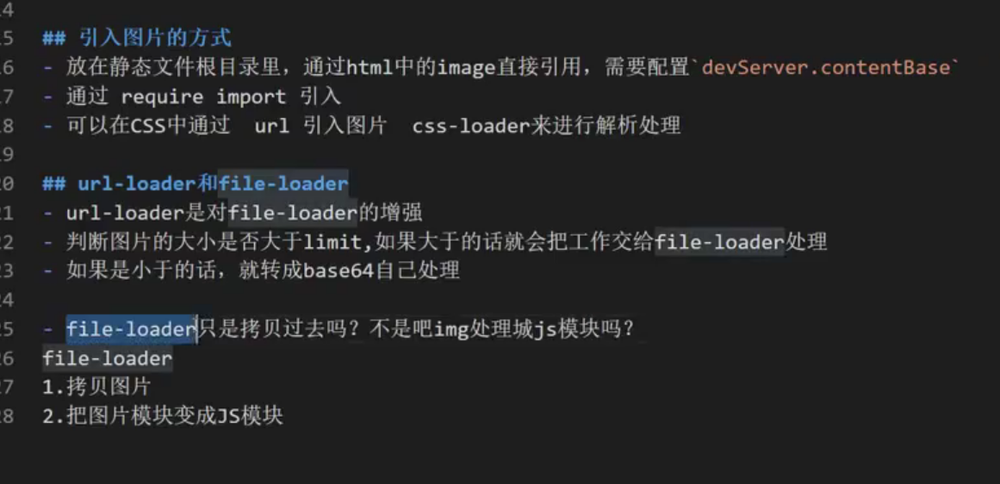
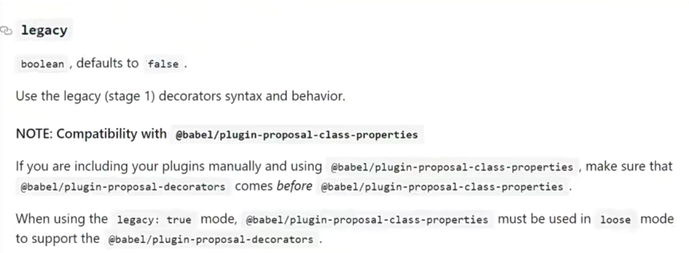
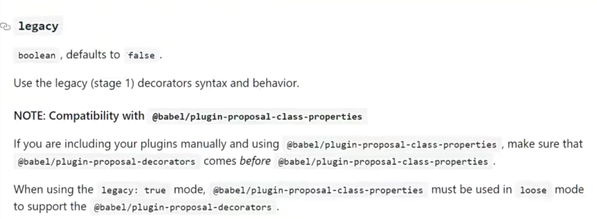
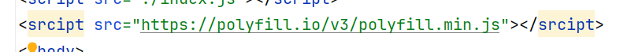
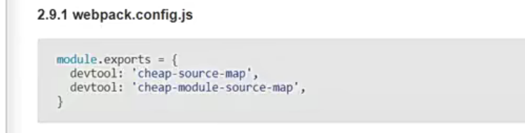
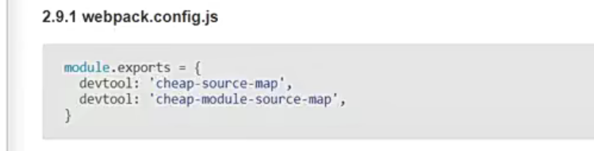
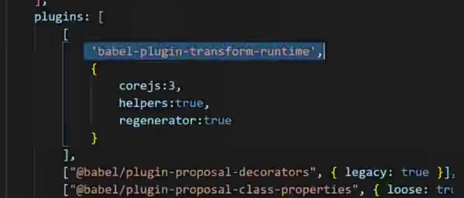
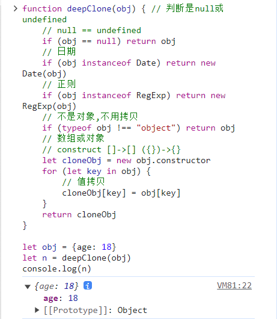

预习课(架构)
2021 第一期 Vue3 架构课
任务 1：1.vue3 变化介绍_【海量资源-：www.1.com】

webpack(202011)(架构)(全)
任务 1：1.201122.webpack 的核心概念_【海量资源-：www.1.com】


npm i webpack webpack-cli --save-dev
可以–config 指定配置文件，默认找根目录下的 webpack.config.js
{
"scripts": {
"build": "webpack --config webpack.config.js"
}
}
join 是相对路径，resolve 是绝对路径


console.log(111);
let title = require("./hello.txt");
console.log(title);
const {resolve} = require("path");
module.exports = {
// mode 当前的运行模式
// development:
// none
// production:
mode: "development",
// 入口文件
entry: "./src/index.js",
output: {
// 指定输出目录(绝对路径)
// __dirname当前文件所在目录
path: resolve(__dirname, "dist"),
// 指定输出文件名
filename: "main.js",
},
};
<!DOCTYPE html>
<html lang="zh">
<head>
<meta charset="UTF-8"/>
<meta name="viewport" content="width=device-width, initial-scale=1.0"/>
<title>Document</title>
</head>
<body>
<script src="main.js"></script>
</body>
</html>
raw-loader 原生 loader
npm i raw-loader -D
const {resolve} = require("path");
module.exports = {
// ...
module: {
rules: [
// 正则匹配以txt结尾的走这个loader
// loader本质是转换器，可以把别的类型的文件转换成loader
{test: /\.txt$/, use: "raw-loader"},
],
},
};


loader
/**
* 本质上是一个函数
* 接收源文件，返回一个js模块代码
*/
function loader(source) {
return `module.exports = "${source}"`;
}
module.exports = loader;
const {resolve} = require("path");
module.exports = {
// ...
module: {
rules: [
// 正则匹配以txt结尾的走这个loader
// loader本质是转换器，可以把别的类型的文件转换成loader
// { test: /\.txt$/, use: 'raw-loader' }
{test: /\.txt$/, use: resolve(__dirname, "loaders", "raw-loader.js")},
],
},
};
plugin
npm i html-webpack-plugin -D
const {resolve} = require("path");
const HtmlWebpackPlugin = require("html-webpack-plugin");
module.exports = {
// ...
plugins: [
new HtmlWebpackPlugin({
// 指定模板
template: "./src/index.html",
}),
],
};

自动引入了 main.js
webpack 运行有很多事件，插件就在其中某个事件里作用
mode


任务 2：2.201122.开发服务器 webpack-dev-server 的配置
npm install webpack-dev-server --save-dev
#npm install webpack-dev-server -D
// webpack.config.js
const {resolve} = require('path')
const HtmlWebpackPlugin = require("html-webpack-plugin")
module.exports = {
// ...
devServer: {
// 服务器上部署哪些文件
// contentBase:resolve(__dirname,"dist")
// webpack5改为这个
// 如果output目录找不到,就从这个静态资源目录找
// 其实静态文件根目录可以有多个
static: resolve(__dirname, "static"),
compress: true, // 压缩
port: 8080,
// writeToDisk: true, // webpack4
devMiddleware: {
// 打包的文件也会输出到磁盘(不止在内存)
writeToDisk: true
},
open: true,// 自动打开浏览器
}
}
{
"scripts": {
"build": "webpack",
"start": "webpack serve"
}
}
任务3：3.201122.支持css、less和sass
const {resolve} = require('path')
const HtmlWebpackPlugin = require("html-webpack-plugin")
module.exports = {
// webpack.config.js
output: {
// 指定输出目录(绝对路径)
// __dirname当前文件所在目录
path: resolve(__dirname, 'dist'),
// 指定输出文件名
filename: 'main.js',
// 打包后的文件插入html文件时,src=publicPath+filename
// /assets/main.js
publicPath: "/assets"
},
devServer: {
// ...
devMiddleware: {
// ...
publicPath: '/', // 静态文件访问目录
},
}
}
支持css
npm i style-loader css-loader -D
# 如果报错就先安装这个
npm install node-gyp@latest
npm i less less-loader node-sass sass-loader -D
// webpack.config.js
const {resolve} = require('path')
const HtmlWebpackPlugin = require("html-webpack-plugin")
module.exports = {
// ...
module: {
rules: [
// ...
// 多个loader,从右往左执行
{test: /\.css$/, use: ['style-loader', 'css-loader']},
// less/scss -> css -> style
{test: /\.less$/, use: ['style-loader', 'css-loader', 'less-loader']},
{test: /\.scss$/, use: ['style-loader', 'css-loader', 'sass-loader']}
]
},
}
// less.less
@color: blue;
#less-container {
color: @color
}
// sass.scss
$color: orange;
#less-container {
color: $color
}
/* index.css */
@import "bg.css";
body {
color: indianred;
}
/*bg.css*/
body {
background-color: skyblue;
}
// index.js
import './index.css'
import './less.less'
import './sass.scss'
console.log(111);
let title = require('./hello.txt')
console.log(title);
// document.write(title.default)
<!DOCTYPE html>
<html lang="zh">
<head>
<meta charset="UTF-8">
<meta name="viewport" content="width=device-width, initial-scale=1.0">
<title>webpack</title>
</head>
<body>
<!--可以访问到开发服务器的静态资源-->
<img src="/logo.png" alt="logo.png">
123
<div id="less-container">less-container</div>
<div id="sass-container">sass-container</div>
<script src="index.js"></script>
</body>
</html>
任务4：4.201122.支持图片
npm i file-loader url-loader html-loader -D
遇到bug了

// webpack.config.js
const {resolve} = require('path')
const HtmlWebpackPlugin = require("html-webpack-plugin")
module.exports = {
// ...
module: {
rules: [
// ...
{
test: /\.(jpg|png|gif|bmp)$/, use: [
{
// loader: 'file-loader',
// 对file-loader有增强
loader: "url-loader",
options: {
// 该loader会把文件复制到output目录,并且重命名
name: '[hash:10].[ext]',
// 如果为true,则需要通过img.default取值
esModule: false,
// url-loader多的属性
// 如果文件体积小于limit,就转为base64字符串内嵌到html
// 如果大于,就和file-loader的行为一致
limit: 32 * 1024
}
}]
},
// 可以解析html中的相对路径引入
// file-loader实现的
{test: /\.html$/, use: ['html-loader']},
]
},
}
<!DOCTYPE html>
<html lang="zh">
<head>
<meta charset="UTF-8">
<meta name="viewport" content="width=device-width, initial-scale=1.0">
<title>webpack</title>
</head>
<body>
<!--可以访问到开发服务器的静态资源-->
<img src="/logo.png" alt="logo.png">
123
<div id="less-container">less-container</div>
<div id="sass-container">sass-container</div>
<div id="image-container">image-container</div>
<img src="./images/thenx.jpg">
<script src="./index.js"></script>
</body>
</html>
/*index.css*/
@import "bg.css";
body {
color: indianred;
}
#image-container {
border: 1px solid black;
width: 400px;
height: 103px;
background-image: url('./images/thenx.jpg');
}
import './index.css'
import './less.less'
import './sass.scss'
// ...
let img = require("./images/thenx.jpg")
let image = new Image()
// image.src = img.default // esModule: true
image.src = img // esModule: false
document.body.appendChild(image)
任务5：5.201122.JS的兼容性
npm i babel-loader @babel/core @babel/preset-env @babel/preset-react @babel/polyfill @babel/plugin-proposal-decorators @babel/plugin-proposal-class-properties -D

# 都是17版本的(17.0.1)
npm i react react-dom -S
// index.js
/*import React from "react";
import ReactDOM from 'react-dom'
ReactDOM.render(<h1>hello</h1>, document.getElementById("root"))
let sum = (a, b) => a + b*/
/**
*
* @param target 装饰的目标
* @param key 装饰的key
* @param descriptior 属性描述器
*/
function readonly(target, key, descriptior) {
descriptior.writable = false
}
class Person {
// 装饰器: @xxx -> @babel/plugin-proposal-decorators 处理
// 类属性: PI -> @babel/plugin-proposal-class-properties 处理
@readonly PI = 3.14;
}
let p = new Person();
p.PI = 31.5
console.log(p)
<!DOCTYPE html>
<html lang="zh">
<head>
<meta charset="UTF-8">
<meta name="viewport" content="width=device-width, initial-scale=1.0">
<title>webpack</title>
</head>
<body>
<div id="root"></div>
<script src="./index.js"></script>
</body>
</html>
// webpack.config.js
const {resolve} = require('path')
const HtmlWebpackPlugin = require("html-webpack-plugin")
module.exports = {
// ...
module: {
rules: [
{
test: /\.jsx?$/, use: [
{
loader: "babel-loader",
options: {
// presets包含很多插件
presets: [
// 可以转换JS语法
"@babel/preset-env",
// 可以转换JSX语法
"@babel/preset-react"
],
plugins: [
['@babel/plugin-proposal-decorators', {legacy: true}],
['@babel/plugin-proposal-class-properties', {legacy: true}]
]
}
}
]
},
// ...
]
},
}
// jsconfig.json
{
"compilerOptions": {
"experimentalDecorators": true
}
}
任务6：6.201122.path、usage和babel参数

 


任务7：7.201122.eslint代码风格检查
npm i eslint eslint-loader babel-eslint -D
npm i eslint-config-airbnb eslint-loader eslint eslint-plugin-import eslint-plugin-react eslint-plugin-react-hooks eslint-plugin-jsx-a11y -D
出bug，网上说eslint-loader已经弃用(‘getFormatting’ count not find)，我的解决方案
npm install eslint-webpack-plugin --save-dev
// .eslintrc.js
module.exports = {
// root: true, // 根配置文件
extends: 'airbnb',
// parser: 'babel-eslint', // 需要一个解析器来把源代码转为AST
parser: '@babel/eslint-parser',
// 指定解析器选项
parserOptions: {
// 报错 Parsing error: No Babel config file detected
"requireConfigFile": false,
sourceType: "module",
// es2015
ecmaVersion: 2015,
// ecmaVersion: 2017,
},
// 指定脚本运行环境
env: {
browser: true,
},
// 启用的规则及其各自的错误级别
rules: {
"linebreak-style": "off",
"indent": "off", // 缩进风格
// "indent": ["error", 3], // 不等于3个缩进就报错
"quotes": "off",// 引导类型
// "no-console": "error",// 禁止使用console
"no-param-reassign": "off",
}
}
// webpack.config.js
const {resolve} = require('path')
const HtmlWebpackPlugin = require("html-webpack-plugin")
const ESLintWebpackPlugin = require("eslint-webpack-plugin");
module.exports = {
plugins: [
new HtmlWebpackPlugin({
// 指定模板
template: './src/index.html'
}),
new ESLintWebpackPlugin({
fix: true, // 启动自动修复
files: resolve(__dirname, 'src')
})
],
}
为了解决eslint解析装饰器语法的报错
{
"presets": [
"@babel/preset-env"
],
"plugins": [
[
"@babel/plugin-proposal-decorators",
{
"legacy": true
}
]
]
}
任务8：8.201122.sourcemap
 

任务9：9.201122.如何打包第三方类库
npm i lodash -S
npm i expose-loader -D
方法2
// webpack.config.js
const {resolve} = require('path')
const HtmlWebpackPlugin = require("html-webpack-plugin")
const webpack = require('webpack')
const ESLintWebpackPlugin = require("eslint-webpack-plugin");
module.exports = {
plugins: [
// 无法全局用（html script）
// 可以在js里用
new webpack.ProvidePlugin({
_: 'lodash',
})
],
}
方法3
// webpack.config.js
const {resolve} = require('path')
const HtmlWebpackPlugin = require("html-webpack-plugin")
const ESLintWebpackPlugin = require("eslint-webpack-plugin");
module.exports = {
module: {
rules: [
{
test: require.resolve('lodash'),
loader: 'expose-loader',
options: {
exposes: {
globalName: '_',
override: true,
}
}
},
]
}
}
// index.js
// import _ from 'lodash'
require("lodash");
alert(_.join(['a', 'b', 'c'], '_'));
方法4
方法5
// webpack.config.js
const {resolve} = require('path')
const HtmlWebpackExternalsPlugin = require('html-webpack-externals-plugin');
module.exports = {
plugins: [
// ...
new HtmlWebpackExternalsPlugin({
externals: [
{
module: 'lodash',
entry: 'https://cdnjs.cloudflare.com/ajax/libs/lodash.js/4.17.21/lodash.min.js',
global: '_' // 全局变量名
}
]
}),
],
}
任务10：10.201122.环境变量配置
任务11：11.201125.开发和线上环境配置
任务12：12.201125.polyfill和runtime

任务13：13.201125.sourcemap
任务14：14.201127.watch、clean、copy、proxy_
任务22：22.20201129_webpack同步加载打包文件分析
预习课(架构)
任务1：1.ES6
// 1_let&const.js
// var 要求全部改用 const let
// 1 var 声明的变量 污染全局变量
var a = 1
console.log(window.a)
let b = 2
console.log(window.b)
console.log(b)
// 2 var 可能导致变量提升(还没声明就能使用)
console.log(a)
var a = 1
console.log(c)
let c = 3
// 3 var 可以重复声明
var a = 1
var a = 2
var a = 3
// let 可以解决
let a = 1
let a = 2
let a = 3
// Identifier 'a' has already been declared
// 4 var 作用域的问题 (常见作用域: 全局/函数)
{
var a = 1;
}
console.log(a)
// Uncaught ReferenceError: a is not defined
{
let a = 2
}
console.log(a)
// let 不同作用域可以重复声明
let a = 100
{
// babel编译为es5后不会报错(es5是用var声明的)
// Uncaught ReferenceError: Cannot access 'a' before initialization
console.log(a) // 暂存死区
let a = 200
}
for (var i = 0; i < 10; i++) {
// (function (i){
// setTimeout(function () {
// console.log(i)
// })
// })(i)
setTimeout(function () {
console.log(i)
})
}
for (var i = 0; i < 10; i++) {
// 限制i的作用域
(function (i) {
setTimeout(function () {
console.log(i)
})
})(i)
}
for (let i = 0; i < 10; i++) {
setTimeout(function () {
console.log(i)
})
}
// const 常量 不能改变(地址不变即可)
let pi = '3.14'
pi = 3.15
// TypeError: Assignment to constant variable.
const PI = '3.14'
PI = 3.15
const P = {r: 3.14}
PI.r = 3.15


// 1_let&const.js
// var 要求全部改用 const let
// 1 var 声明的变量 污染全局变量
var a = 1
console.log(window.a)
let b = 2
console.log(window.b)
console.log(b)
// 2 var 可能导致变量提升(还没声明就能使用)
console.log(a)
var a = 1
console.log(c)
let c = 3
// 3 var 可以重复声明
var a = 1
var a = 2
var a = 3
// let 可以解决
let a = 1
let a = 2
let a = 3
// Identifier 'a' has already been declared
// 4 var 作用域的问题 (常见作用域: 全局/函数)
{
var a = 1;
}
console.log(a)
// Uncaught ReferenceError: a is not defined
{
let a = 2
}
console.log(a)
// let 不同作用域可以重复声明
let a = 100
{
// babel编译为es5后不会报错(es5是用var声明的)
// Uncaught ReferenceError: Cannot access 'a' before initialization
console.log(a) // 暂存死区
let a = 200
}
for (var i = 0; i < 10; i++) {
// (function (i){
// setTimeout(function () {
// console.log(i)
// })
// })(i)
setTimeout(function () {
console.log(i)
})
}
for (var i = 0; i < 10; i++) {
// 限制i的作用域
(function (i) {
setTimeout(function () {
console.log(i)
})
})(i)
}
for (let i = 0; i < 10; i++) {
setTimeout(function () {
console.log(i)
})
}
// const 常量 不能改变(地址不变即可)
let pi = '3.14'
pi = 3.15
// TypeError: Assignment to constant variable.
const PI = '3.14'
PI = 3.15
const P = {r: 3.14}
PI.r = 3.15
// 2_spread.js
// ... 展开运算符
// 把两个数组或对象合并
let arr1 = [1, 2, 3]
let arr2 = [4, 5, 6]
console.log(arr1.concat(arr2))
// es6
let arr3 = [...arr1, ...arr2]
console.log(arr3)
let school = {name: 'zfpx'}
// let my = {age: 18 }
// let my = {age: 18, name: 'jw'} // 该name会覆盖school的name
// 嵌套对象 -> 传递的是被嵌套对象的指针 -> 修改原对象的值,all的值也会变
// 深拷贝(拷贝值,地址不同)和浅拷贝(传地址)
let my = {age: {count: 18}, name: 'jw'}
let all = {...school, ...my}
my.age.count = 100
console.log(all)
// 原来的my放进新对象,用一个新的age把原来的age也拷贝
let newMy = {...my, age: {...my.age}}
let all22 = {...school, ...newMy}
my.age.count = 200
console.log(all22)
// ... 只能拷贝一层
// 可以把对象先转为字符串,再把字符串转对象
let school1 = {name: 'zfpx'}
let my1 = {age: {count: 18}, name: 'jw'}
let all1 = JSON.parse(JSON.stringify({...school1, ...my1}))
my.age.count = 100
console.log(all1)
// 这个方法的问题: func
let school2 = {
name: 'zfpx', fn: function () {
}, aa: undefined, bb: null, arr: [1, 2, 3, [4, 5]]
}
let my2 = {age: {count: 18}, name: 'jw'}
let all2 = JSON.parse(JSON.stringify({...school2, ...my2}))
my.age.count = 100
console.log(all2)
// Object.assign = ...
// 都是浅拷贝
let obj1 = {name: 'zfjg', age: 18}
let newObj1 = Object.assign(obj1)
console.log(newObj1)
let obj2 = {name: 'zfjg', age: 18}
let newObj2 = {}
// obj,{c:18} -> newObj
Object.assign(newObj2, obj2, {c: 18})
console.log(newObj2)
// 自己实现深拷贝的方法 (递归拷贝 一层一层地拷贝)
// 类型判断 => 防止传null/undefined/非对象
// typeof instanceof Object.prototype.toString.call constructor
function deepClone(obj, hash = new WeakMap()) { // 判断是null或undefined
// null == undefined
if (obj == null) return obj
// 日期
if (obj instanceof Date) return new Date(obj)
// 正则
if (obj instanceof RegExp) return new RegExp(obj)
// 不是对象,不用拷贝
if (typeof obj !== "object") return obj
// 数组或对象
if (hash.has(obj)) return hash.get(obj) // 如果weakMap中有对象就直接返回
// construct []->[] ({})->{}
let cloneObj = new obj.constructor
// clone完就存好,再次拷贝直接返回clone完的对象
hash.set(obj, cloneObj) // 防止循环依赖
for (let key in obj) {
// 防止遍历原型链上的属性
if (obj.hasOwnProperty(key)) {
// 深拷贝
// 如果赋予的值是对象,就把对象放到weakMap
cloneObj[key] = deepClone(obj[key], hash)
}
}
return cloneObj
}
let obj = {age: {name: 123}}
// 循环引用
obj.xxx = obj
let n = deepClone(obj)
obj.age.name = 456
console.log(n)
let n1 = deepClone([1, 2, 3])
console.log(n1)
// 3_set&map.js
// set map 是两种存储结构
// set 集合 不能放重复的值(放了白放)
let s = new Set([1, 2, 3, 4, 1, 2, 3, 4])
// 基础类型 string number boolean undefined object symbol
console.log(typeof s)
console.log(s)
// 添加和删除 set没有顺序
s.add('5')
s.delete('5')
console.log(s.entries());
console.log(s.keys());
console.log(s.values());
s.forEach(item => {
console.log(item)
})
// promise symbol.iterator
// 可被迭代,所以可以展开
let arr = [...s]
console.log(arr)
// 面试: 并集 交集 差集
let s01 = [1, 2, 3, 1, 2, 6]
let s02 = [3, 4, 5, 1, 2]
function union() {
let s1 = new Set(s01)
let s2 = new Set(s02)
console.log([...s1, ...s2]);
console.log(...new Set([...s1, ...s2]));
}
union()
function intersection() {
// 返回true表示留下
return [...new Set(s01)]
.filter(function (item) {
return new Set(s02).has(item);
})
}
console.log(intersection());
function diff() {
// 返回true表示留下
return [...new Set(s01)]
.filter(function (item) {
return !new Set(s02).has(item);
})
}
console.log(diff())
// map k-v 不能重复
let m = new Map()
m.set("name", "zfjg")
m.set("name", "123")
// 这个obj的引用的空间被set所引用
let obj = {name: 1}
m.set(obj, '456')
// obj为null,空间还在
obj = null
console.log(obj)
console.log(m)
// weakMap的key必须是对象类型
let wm = new WeakMap()
// Invalid value used as weak map key
// wm.set("name", "zfjg")
// wm.set("name", "123")
// 这个obj的引用的空间被set所引用
let obj1 = {name: 1}
wm.set(obj1, '456')
// 在ide里: WeakMap { <items unknown> }
// 在浏览器里: WeakMap{{…} => '456'}
console.log(wm)
// obj为null,空间还在
obj1 = null // 可以被销毁
console.log(obj1)
console.log(wm)
```
## 任务2：2.ES6

```js
// 4_defineProperty.js
// let obj = {name: 'zfjg'}
// obj.name = 123
// Object.defineProperty es5 vue2
// 通过它定义属性,可以增加拦截器
let obj = {}
let other = 'other'
// 不可枚举
// 函数的原型 Array.prototype 也不可枚举
// defineProperty只能用在对象上，数组也不行
Object.defineProperty(obj, 'name', {
enumerable: true, // 可枚举
configurable: true, // 可配置(可以被delete)
// writable: true, // 可以被写(修改)
// value: 'hello',
// 用了get和set就不能用value和writable
get() {
console.log('-----')
return other
},
set(v) {
other = v
}
})
console.log(obj)
console.log("obj.properties:")
for (let key in obj) {
console.log(key)
}
console.log(obj.name)
obj.name = 'world'
console.log(obj.name)
delete obj.name
console.log(obj)
// 对象的setter和getter
let iobj = {
other: '123',
get name() {
return this.other
},
set name(v) {
this.other = v
}
}
console.log(iobj.name)
iobj.name = 456
console.log(iobj.name)
```
```js
// 5_mvvm.js
// vue的数据劫持 (把所有的属性都改成get和set)
// 模拟的更新方法
function update() {
console.log('更新视图')
}
let data = {
name: 'zfpx',
age: 18,
address: {
location: 'zh_cn'
}
}
// 重写数组方法
let methods = ['push', 'slice', 'pop', 'sort', 'reverse', 'unshift']
// 变异方法 push shift unshfit reverse sort splice pop
let oldProto = Array.prototype
let proto = Object.create(oldProto) // 克隆了一分
methods.forEach(item => {
proto[item] = function () {
update();
oldProto[item].apply(this, arguments);
}
})
// .forEach(method => {
// // AOP 面向切片 装饰器
// // 拿到原有方法
// // let oldMethod = Array.prototype[method]
// // 增强原有方法
// Array.prototype[method] = function () {
// // console.log(oldMethod)
// update()
// // oldMethod.call(this,...arguments)
// Array.prototype[method].call(this, ...arguments)
// }
// })
// 观察者
function observer(_obj) {// proxy reflect
if (Array.isArray(_obj)) {
// AOP
return _obj.__proto__ = proto;
// 重写 这个数组里的push shift unshfit reverse sort splice pop
}
if (typeof _obj !== 'object') return _obj;
for (let key in _obj) {
defineReactive(_obj, key, _obj[key])
}
}
function defineReactive(_obj, key, value) {
// 递归调用，将嵌套对象的key也变为响应式
observer(value)
Object.defineProperty(_obj, key, {
get() {
return value
},
set(v) {
if (v !== value) {
// 如果新的val是对象，也进行数据劫持
observer(v)
update()
value = v
}
}
})
}
observer(data)
data.name = 'jw'
// data.address.location = 'en'
data.address = {
location: '北京'
}
data.address.location = 'en'
data.a = 1
data.address = [1, 2, 3]
// data.address[2] = 100
// 调用数组方法无法触发set
// data.address.push(1000)
data.address.push(4)
data.address.push(4)
data.address.reverse()
// Vue.prototype.$set = function (obj, key, callback) {
// Object.defineProperty(obj, key, {
// get: callback
// })
// }
```
```js
// 6_arrowFn.js
// 箭头函数 没有this 没有arguments
// 没用let，可能变量提升
function a() {
}
// 用了let
let a1 = function (x) {
}
a1(1)
// 只有一个参数，可以省略
let a2 = x => {
}
a2(1)
// 方法体只有返回语句，可以省略
let a3 = (x, y) => x + y
console.log(a3(1, 2));
// 返回的是对象，省略的写法
let a4 = (x, y) => ({total: x + y})
console.log(a4(1, 2))
let a5 = function (x) {
return function (y) {
return x + y
}
}
console.log(a5(1)(2));
// 返回值是函数，省略的写法
let a6 = x =>
y => x + y
console.log(a6(1)(2))
// this的问题，看.前面的是谁 this就是谁
let v = 1
let obj = {
v: 2,
// fn:function () {
fn() { // this = obj
setTimeout(function () {
// undefined
console.log(this.v)
})
setTimeout(() => {
// 2
console.log(this.v)
})
console.log(this.v)
},
fn1: () => {
setTimeout(function () {
// undefined
console.log(this.v)
})
setTimeout(() => {
// undefined
console.log(this.v)
})
// undefined
console.log(this.v)
}
}
// obj.fn()
console.log("arrow fn")
obj.fn1()
```
## 任务3：3.ES6数组方法

```js
// 1.proxy.js
// Object.defineProperty 不支持数组的更新 push slice ...
// 希望数组变化就能更新视图
let arr = [1, 2, 3]
function update() {
console.log("更新视图")
}
// proxy可以监控到数组、对象的变化
let proxy = new Proxy(arr, {
/**
*
* @param target 被代理的对象
* @param key 被修改的位置
* @param value 修改的值
*/
set(target, key, value) {
console.log(key, value)
// 数组变化会改变数组内容，然后改变数组length
// 为了防止报错，判断一下是不是length
// 但是这样的话，pop修改length，不会更新视图
if (key === 'length') return true
// reverse会更新多次，因为元素的位置改变（中间的那个位置不变，更新次数=length-1(单)）
update()
return Reflect.set(target, key, value)
// update()
// target[key] = value
},
get(target, key) {
// return target[key]
return Reflect.get(target, key)
}
})
proxy[0] = 100
proxy.pop()
proxy.push(123)
proxy.reverse()
console.log(proxy[0])
console.log(proxy)
```
```js
// 2.arr.js
// 数组方法 es5 forEach reduce map filter some every
// es6 find findIndex
// es7 includes
// reduce 收敛
// 求和
let r = [1, 2, 3, 4, 5].reduce((a, b) => {
console.log(a, b)
return a + b
})
console.log(r)
let r1 = [
0,
{price: 100, count: 1},
{price: 200, count: 2},
{price: 300, count: 3},
].reduce((a, b) => {
console.log(a, b)
// 中间数500，会导致无法获取price和count，所以第0项设为0
return a + b.price * b.count
})
console.log(r1)
let r2 = [
{price: 100, count: 1},
{price: 200, count: 2},
{price: 300, count: 3},
].reduce((a, b) => {
console.log(a, b)
return a + b.price * b.count
// 中间数500，会导致无法获取price和count，所以第0项设为0
}, 0) // 设置第0项
console.log(r2)
// reduce常见功能 多个数据变成一个
let keys = ['name', 'age']
let values = ['jw', 18]
let obj = keys.reduce((a, b, index, current) => {
a[b] = values[index]
return a
}, {})
console.log(obj)
let obj1 = keys.reduce((a, b, index, current) => (a[b] = values[index], a), {})
console.log(obj1)
// reduce redux compose 方法
function sum(a, b) {
return a + b
}
function toUpper(str) {
return str.toUpperCase()
}
function add(str) {
return "***" + str + "***"
}
function toLen(str) {
return str.length
}
console.log(add(toUpper(sum('zfpx', 'jw'))));
// function compose(...fns) {
// return function (...args) {
// let lastFn = fns.pop();
// return fns.reduceRight((a, b) => {
// // 从后往前执行
// return b(a)
// }, lastFn(...args))
// }
// }
function composeForward(...fns) {
return fns.reduce((a, b) => {
return (...args) => { // add(toUpper(sum(
return a(b(...args))
}
})
}
let composeForwardSimple = (...fns) => fns.reduce((a, b) => (...args) => a(b(...args)))
let compose =
(...fns) => (...args) => {
let lastFn = fns.pop()
return fns.reduceRight((a, b) => b(a), lastFn(...args))
}
// 从后往前执行
let res_c = compose(add, toUpper, sum)('zfpx', 'jw')
console.log(res_c)
let res_c_f = composeForward(add, toUpper, sum)('zfpx', 'jw')
console.log(res_c_f)
let res_c_f_s = composeForward(add, toUpper, sum)('zfpx', 'jw')
console.log(res_c_f_s)
Array.prototype.reduce = function (callback, prev) {
// this = [1,2,3]
for (let i = 0; i < this.length; i++) {
if (prev == undefined) {
prev = callback(this[i], this[i + 1], i + 1, this)
i++
} else {
prev = callback(prev, this[i], i, this)
}
}
return prev
};
console.log([1, 2, 3].reduce((a, b) => {
return a + b
}));
console.log([1, 2, 3].reduce((a, b) => {
return a + b
}, 100));
// map 映射
// 遍历每一项*2
console.log([1, 2, 3].map(item => item * 2));
// filter 过滤
// 过滤为2的元素
console.log([1, 2, 3].filter(item => item !== 2));
// some
// 有为2的元素就返回true
console.log([1, 2, 3].some(item => item === 2));
// every
// 都为1的就返回true
console.log([1, 2, 3, 4, 5].every(item => item === 1));
// find
// 找到后返回找到的项，找不到返回undefined
console.log([1, 2, 3].find(item => item === 2));
//
console.log([1, 2, 3].indexOf(1))
console.log([1, 2, 3].includes(1))
```
## 任务4：4.ES6中的类

```js
// 4.es6.class.js
class Animal {
// es7支持静态属性
// static flag = 123 // es7写法
// es6只支持静态方法
static flag() {
return 123
}
constructor(name) {
this.name = name
this.eat = '吃'
// 如果返回引用类型，子类new后会变成该返回值
// return {a:1}
// 如果是普通类型，不会影响new出来的结果
return 123
}
// 原型上的方法
say() {
console.log('say')
// console.log(this)
}
}
// 类不能当函数用
let a = new Animal()
// this: Animal { name: undefined, eat: '吃' }
a.say()
// this: {}
a.__proto__.say()
// es6里，如果单独调用原型上的方法，this不存在
let say = a.say
// this: undefined
say()
console.log(Animal.flag())
// 实例+原型属性都有
class Tiger extends Animal {
// 没写constructor, 则默认将参数传给父类constructor
constructor(name) {
super(name); // Animal.call(this)
}
}
// let tr = new Tiger('tiger')
// console.log(tr) // {a:1}
let t = new Tiger('tiger')
t.say()
console.log(t.name)
// 父类的静态方法要通过类（不是实例）获取
console.log(Tiger.flag())
// 可以用babel官网转换代码
```
```js
// 3.class.js
// es6 类 es5 构造函数
function Animal(name) {
// 属性 分为两种 实例上的属性/公有属性
// 这样定义的都是实例上的属性
this.name = name
this.arr = [1, 2, 3]
this.eat = '吃'
}
// 定义在原型链上,是公有的
Animal.prototype.address = {location: '山沟沟'}
let a1 = new Animal('猴子')
let a2 = new Animal('小鸡')
console.log(a1, a2)
console.log(a1.arr === a2.arr)
console.log(a1.address === a2.address)
// 每个实例都有一个 __proto__ 指向所属类的原型
console.log(a1.__proto__ === Animal.prototype)
console.log(a1.constructor === Animal)
console.log(Animal.__proto__ === Function.prototype)
console.log(a1.__proto__.__proto__ === Object.prototype)
console.log(Object.prototype.__proto__) // null
// 类的继承
function Tiger(name) {
this.name = name
this.age = 10
// 继承父类属性
// name.log == undefined
// Animal.call(this)
// name.log == name
// Animal.call(this, ...arguments)
Animal.apply(this, arguments)
}
Tiger.prototype.say = function () {
console.log('say')
}
// 继承父类公共属性/方法
// Tiger.prototype.__proto__ = Animal.prototype
// Object.create es5
// Tiger.prototype = Object.create(Animal.prototype)
// Tiger.prototype = Object.create(Animal.prototype, {constructor: {value: Tiger}})
// function create(parentPrototype) {
// let Fn = function () {
// }
// Fn.prototype = parentPrototype
// let fn = new Fn() // 只有父类的prototype
// // 之前fn创建会是Animal,这里修改之后创建的是tiger
// fn.constructor = Tiger
// return fn
// }
// Tiger.prototype = create(Animal.prototype)
// 等价于 // Tiger.prototype.__proto__ = Animal.prototype
Object.setPrototypeOf(Tiger.prototype, Animal.prototype) // es7
// Tiger.prototype = new Animal() // 不能用 不能给父类传递参数
// 继承父类实例上的属性
let tiger = new Tiger('tiger');
console.log(tiger.constructor)
console.log(tiger.eat)
console.log(tiger.arr)
console.log(tiger.name)
console.log(tiger.address)
// 使用: call+Object.create或call+setPrototypeOf
任务5：5.ES6类装饰器

npm i @babel/plugin-transform-class-properties @babel/cli @babel/core @babel/preset-env @babel/plugin-proposal-decorators --save-dev
// 1.class.js
// es7 语法，node并不支持 webpack+babel -> es5
class Animal {
static flag = '111'
constructor() {
this.name = 'xxx'
}
// 实例上的属性
age = 18
say() {
console.log('say')
}
}
// 2.class-decorator.js
// 用了装饰器 mobx nest vue
// 装饰器可以修饰 类 类的属性 类的原型上的方法
// 修饰的时候 就是把这个 类 属性... 传递给修饰的函数
@flag('哺乳类2015') class Animal {
@readonly
PI = 3.14
// 实例上的属性
age = 18
@before say(a) {
console.log('say', a)
}
}
// 类的静态属性
// function flag(constructor) {
// constructor.type = '哺乳类'
// }
function flag(value) {
return function (constructor) {
constructor.type = value
}
}
console.log(Animal.type)
// 类的属性(实例上的)
function readonly(target, property, descriptor) {
descriptor.writable = false
// setTimeout(() => {
// console.log(target == Animal.prototype)
// })
}
let animal = new Animal()
// animal.PI = 3.15
function before(target, property, descriptor) {
// 加在函数上,value是该函数
let oldSay = descriptor.value
// aop
descriptor.value = function () {
console.log('before')
// target是Animal原型
oldSay.call(target, ...arguments)
}
}
animal.say(animal.PI)
.babelrc
{
"presets": [
[
"@babel/preset-env",
{
"loose": true
}
]
],
"plugins": [
[
"@babel/plugin-proposal-decorators",
{
"legacy": true
}
],
[
"@babel/plugin-transform-class-properties",
{
"loose": true
}
]
]
}
package.json
{
"scripts": {
"babel1": "npx babel ./1.class.js -o es5-class.js && node es5-class.js",
"babel2": "npx babel ./2.class-decorator.js -o es5-class-decorator.js && node es5-class-decorator.js"
}
}
任务6：1.before方法
(plus) 专题课
编译原理专题课(架构)
任务1：1.编译器工作流
// ast-my/doc/1.tokenizer.js
let esprima = require('esprima')
let estraverse = require('estraverse-fb')
let sourceCode = `<h1 id="title"><span>hello</span>world</h1>`
let ast = esprima.parseModule(sourceCode, {
// 是否为jsx
jsx: true,
// 是否打印token
tokens: true
})
console.log(ast)
let ident = 0
function padding() {
return ' '.repeat(ident)
}
// 遍历
estraverse.traverse(ast, {
enter(node) {
console.log(padding() + node.type + '进入')
ident += 2
},
leave(node) {
ident -= 2
console.log(padding() + node.type + '离开')
}
})
任务2：2.有限状态机
// ast-my/doc/2.lexer.js
/**
* 分词
* 状态机
*/
let NUMBERS = /[0-9]/
const Numeric = 'Numeric'
const Punctuator = 'Punctuator'
let tokens = []
/**
* 开始状态,接收一个字符,返回下一个状态函数
* @param char
*/
let currentToken
// 当前token收集完毕,存入tokens
function emit(token) {
// 还原token
currentToken = {type: '', value: ''}
tokens.push(token)
}
function start(char) {// 1
// 如果是数字
if (NUMBERS.test(char)) {
currentToken = {type: Numeric, value: ''}
}
// 进入新状态/捕获数字
return number(char)
}
function number(char) {
if (NUMBERS.test(char)) {
currentToken.value += char
// return -> state -> number(char)
// 继续执行number状态,直到下一个char不是数字
// 然后进入state重新判断状态
return number
} else if (char === '+' || char === '-') {
// 当前number token收集完毕
emit(currentToken)
// 这里的处理我感觉不是很好
emit({type: Punctuator, value: char})
currentToken = {type: Numeric, value: ''}
return number
}
}
function tokenizer(input) {
// start状态
let state = start
for (let char of input) {
state = state(char)
}
// 收集剩余的token
if (currentToken.value.length > 0) {
emit(currentToken)
}
}
tokenizer("10+20+30-10")
console.log(tokens)
任务3：3.词法分析
// tokenizer.js
const {
LeftParentheses,
JSXIdentifier,
AttributeKey,
AttributeVal, RightParentheses, JSXText, BackSlash, AttributeExpressionValue
} = require('./tokenTypes')
const LETTERS = /[a-z0-9]/
// const curToken = {type: '', value: ''}
let curToken = {type: '', value: ''}
let tokens = []
// 当前token收集完毕,存入tokens
function emit(token) {
// 还原token
// curToken.type = curToken.value = ""
curToken = {type: '', value: ''}
tokens.push(token)
}
// 开始解析 <html
function start(char) {
if (char === '<') {
emit({type: LeftParentheses, value: '<'})
return foundLeftParentheses // 找到了<
}
throw new Error('第一个字符必须是<')
}
// 结束
function eof() {
if (curToken.value.length > 0) emit(curToken)
}
// 找到<状态
function foundLeftParentheses(char) { // char h1
// char是小写字母0-9
if (LETTERS.test(char)) {
curToken.type = JSXIdentifier
curToken.value += char
return jsxIdentifier // 继续收集标识符
} else if (char === '/') {
// 双标签结束 -> 单标签又如何做
emit({type: BackSlash, value: '/'})
return foundLeftParentheses
}
throw new Error('该字符不是<')
}
// 收集标识符
function jsxIdentifier(char) {
if (LETTERS.test(char)) {
curToken.value += char
return jsxIdentifier
} else if (char === ' ') {
// 遇到空格 -> 标识符收集结束
emit(curToken)
// 标签名称解析完, 接着解析标签内属性 <h1 id=xxx
return attribute
} else if (char === '>') {
// todo: malred
emit(curToken)
emit({type: RightParentheses, value: '>'})
return foundRightParentheses
}
return eof
}
// 标签内属性
function attribute(char) {
if (LETTERS.test(char)) {
curToken.type = AttributeKey
curToken.value += char
return attributeKey
} else if (char === '>') {
// todo malred
emit({type: RightParentheses, value: ">"})
return foundRightParentheses
}
throw new Error('key标识符语法错误')
}
// 收集key token
function attributeKey(char) {
if (LETTERS.test(char)) {
curToken.value += char
return attributeKey
} else if (char === '=') {
emit(curToken)
return attributeValue
}
throw new Error('value标识符语法错误')
}
// 解析标签内属性的值
function attributeValue(char) {
if (char === '"') {
curToken.type = AttributeKey
// 要不要加"val"
// curToken.value += char
curToken.value += char
return attributeStringValue
} else if (char === '{') {
curToken.type = AttributeExpressionValue
curToken.value += char
return attributeExpressionValue
}
throw new Error('value标识符语法错误')
}
// name={xxx}
function attributeExpressionValue(char) {
if (LETTERS.test(char)) {
curToken.value += char
return attributeExpressionValue
} else if (char === '}') {
// 属性解析结束了
curToken.value += char
emit(curToken)
return tryLeaveAttribute
}
}
// 读取标签内字符串属性值
function attributeStringValue(char) {
// todo 字符串的值应该不止0-9a-z
if (LETTERS.test(char)) {
curToken.value += char
return attributeStringValue
} else if (char === '"') {
// 属性解析结束了
curToken.value += char
emit(curToken)
return tryLeaveAttribute
}
}
// 标签内属性解析完后试图离开属性解析(属性可能有多个)
function tryLeaveAttribute(char) {
// 隔了一个空格可能是新属性
if (char === ' ') {
return attribute
} else if (char === '>') {
// 标签结束
emit({type: RightParentheses, value: '>'})
return foundRightParentheses
}
}
// 标签结束标记找到
function foundRightParentheses(char) {
if (char === '<') {
// 新标签解析
emit({type: LeftParentheses, value: '<'})
return foundLeftParentheses
} else {
// 可能是文本
curToken.type = JSXText
curToken.value += char
return jsxText
}
}
// 解析标签内文本
function jsxText(char) {
// 新标签
if (char === '<') {
emit(curToken)
emit({type: LeftParentheses, value: '<'})
return foundLeftParentheses
} else {
curToken.value += char
return jsxText
}
}
function tokenizer(input) {
// let tokens = []
let state = start // 开始状态
for (let char of input) {// 遍历字符
if (state === eof) {
break
}
state = state(char)
}
return tokens
}
module.exports = {
tokenizer
}
let source_code = `<h1 id="title" name="malred" ><span>hello</span>world</h1>`
console.log(tokenizer(source_code))
let source_code1 = `<h1 id="title" name="malred" token={xxx}><span>hello</span>world</h1>`
console.log(tokenizer(source_code1))
// 无法解析 单标签 -> src里的/ -> 报错
// let source_code2 = `<img src="./index.css" />`
let source_code2 = `<!--<img src="index.css" />-->`
// console.log(tokenizer(source_code2))
// 无法解析 无 / 的标签
// let source_code1 = `<!DOCTYPE html>
// <html lang="en">
// <head>
// <meta charset="UTF-8">
// <title>Title</title>
// </head>
// <body>
//
// </body>
// </html>`
// console.log(tokenizer(source_code1))
let source_code4 = `<head>
<title>Title</title>
</head>
<body>
</body>
</html>`
console.log(tokenizer(source_code4))
/*
[
{type: 'Punctuator', value: '<'},
{type: 'JSXIdentifier', value: 'h1'},
{type: 'JSXIdentifier', value: 'id'},
{type: 'Punctuator', value: '='},
{type: 'String', value: '"title"'},
{type: 'Punctuator', value: '>'},
{type: 'Punctuator', value: '<'},
{type: 'JSXIdentifier', value: 'span'},
{type: 'Punctuator', value: '>'},
{type: 'JSXText', value: 'hello'},
{type: 'Punctuator', value: '<'},
{type: 'Punctuator', value: '/'},
{type: 'JSXIdentifier', value: 'span'},
{type: 'Punctuator', value: '>'},
{type: 'JSXText', value: 'world'},
{type: 'Punctuator', value: '<'},
{type: 'Punctuator', value: '/'},
{type: 'JSXIdentifier', value: 'h1'},
{type: 'Punctuator', value: '>'}
]
*/
exports.LeftParentheses = 'LeftParentheses' // <
exports.RightParentheses = 'RightParentheses' // >
exports.JSXIdentifier = 'JSXIdentifier' // 标识符
exports.JSXText = 'JSXText' // 文本
exports.BackSlash = 'BackSlash' // /
exports.AttributeKey = 'AttributeKey' // 标签属性key
exports.AttributeVal = 'AttributeVal' // 标签属性value
exports.AttributeExpressionValue = 'AttributeExpressionValue' // 标签属性value
// const LeftParentheses = 'LeftParentheses' // <
// const JSXIdentifier = 'JSXIdentifier' // 标识符
// const AttributeKey = 'AttributeKey' // 标签属性key
// const AttributeVal = 'AttributeVal' // 标签属性value